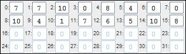

W osobnym oknie, pojawiła się tablica n liczb (indeksowana od 0 do n-1). Powinieneś założyć iż n to liczba całkowita spełniająca podany warunek: 1 ≤ n ≤ 30.
Zadaniem jest napisanie funkcji: int idxMaxElement(n), która zwróci indeks największego elementu. Jeśli w tablicy znajduje się więcej elementów maksymalnych funkcja powinna zwrócić indeks elementu maksymalnego o najmniejszym wartości.

W przypadku tablicy pokazanej na rysunku, znajdującym się wyżej, maksymalnym elementem jest liczba 10 i znajduję się ona w trzech miejscach 2, 8 i 16. Wobec tego funkcja powinna zwrócić 2, gdyż ten indeks jest najmniejszy spośród indeksów elementów maksymalnych.